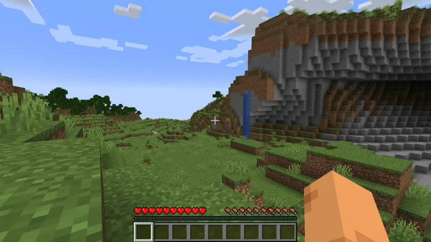
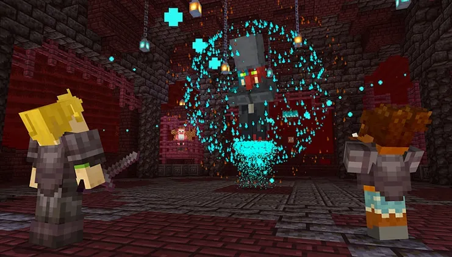
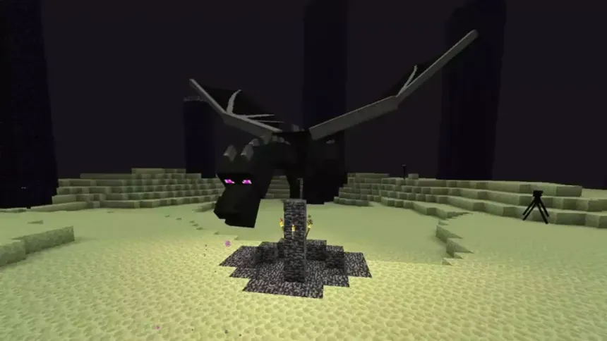
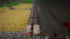
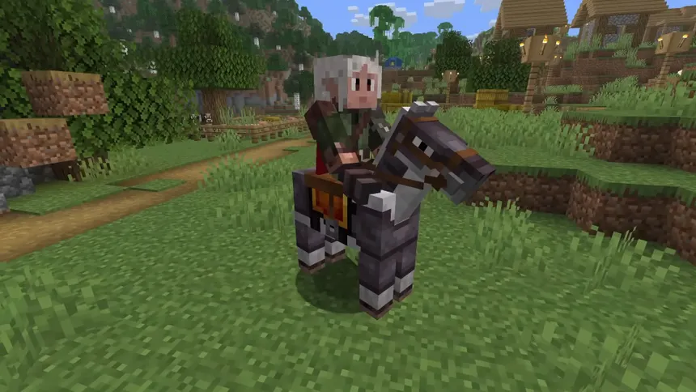

Comment jouer à Minecraft
Minecraft est un jeu de type bac à sable dans lequel le joueur évolue dans un monde généré de manière procédurale. Il n’existe pas de chemin imposé : le joueur est libre de survivre, construire, explorer, combattre ou automatiser selon ses envies. Cette liberté est ce qui fait la richesse et la longévité du jeu.
Bien débuter en mode survie

Lors des premières minutes de jeu, la priorité est de récolter du bois. Cette ressource permet de fabriquer les premiers outils, une table de craft et un abri. Avant la tombée de la nuit, il est indispensable de se protéger, car des créatures hostiles apparaissent dans l’obscurité.
Dormir dans un lit permet de passer la nuit et de fixer son point de réapparition. Une bonne gestion de la nourriture est également essentielle pour survivre lors des explorations et des combats.
Explorer le Nether

Le Nether est une dimension parallèle accessible via un portail en obsidienne. C’est un environnement très hostile, rempli de lave, de monstres puissants et de terrains dangereux. Malgré cela, le Nether est indispensable à la progression.
On y trouve des ressources uniques comme le quartz, la netherite et les bâtons de blaze. Ces derniers sont nécessaires pour fabriquer des Ender Eyes, qui permettent de localiser le portail de l’End.
Affronter l’Ender Dragon

L’Ender Dragon est le boss principal de Minecraft. Pour l’affronter, le joueur doit localiser une forteresse, activer le portail de l’End et entrer dans cette dimension étrange. Une préparation sérieuse est requise : armure enchantée, arc, flèches et potions.
Le combat commence par la destruction des cristaux de l’End, qui permettent au dragon de se régénérer. Une fois vaincu, le joueur débloque l’accès aux îles de l’End, contenant des ressources rares et des structures uniques.
Créer des fermes automatiques

Les fermes automatiques permettent de produire des ressources sans intervention constante. Une ferme à blé assure une source de nourriture fiable, tandis qu’une ferme à fer repose sur le fonctionnement des villageois et des golems.
Les joueurs avancés utilisent la redstone pour automatiser la majorité des ressources, ce qui permet de se concentrer sur la construction et les projets à grande échelle.
Faits intéressants et détails cachés

Minecraft contient de nombreux détails cachés. Certains noms donnés aux créatures déclenchent des effets visuels particuliers. Plusieurs mécaniques actuelles du jeu sont issues d’anciens bugs, devenus des fonctionnalités emblématiques.
Les musiques et les disques du jeu participent à une ambiance parfois calme, parfois mystérieuse, renforçant l’immersion du joueur dans cet univers unique.
Progresser et s’améliorer
Les débutants doivent se concentrer sur la survie et la sécurité. Les joueurs intermédiaires apprennent à utiliser les enchantements, la redstone et l’exploration avancée. Les joueurs expérimentés cherchent à optimiser, automatiser et repousser les limites du jeu.